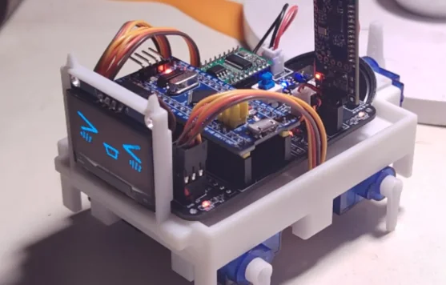
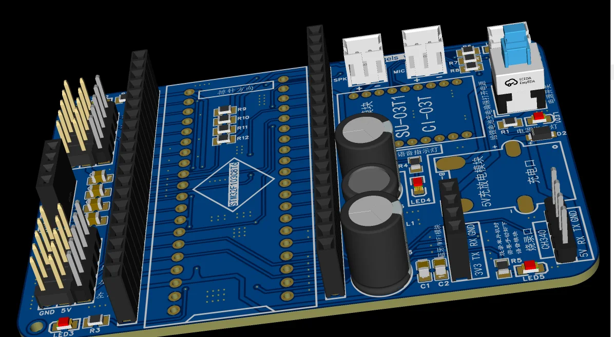

掌上宠物
离线语音交互的桌面小装置，断网也能听懂指令。


问题
语音助手都要联网，延迟高还担心隐私。我想做一个断网也能听话的小东西。
方案
- STM32F103 作为主控，接入 ASRPRO 做离线指令识别，不依赖云端。
- 舵机负责动作反馈，OLED 负责表情显示，形成「听到 → 动作 → 表情」的闭环。
- 软件按识别、控制、显示分模块，验证多任务并发下的响应实时性。
结果
- 完成全系统硬件调试，识别到动作的链路稳定响应。
- 多任务协同下，识别、动作与显示三者互不阻塞。